第1课时｜45分钟
女装设计 · 第10周
第10周｜秋冬第一周：同一个系列，加一层
不另起五套。第09周交的四样，今天各出一个秋冬版。
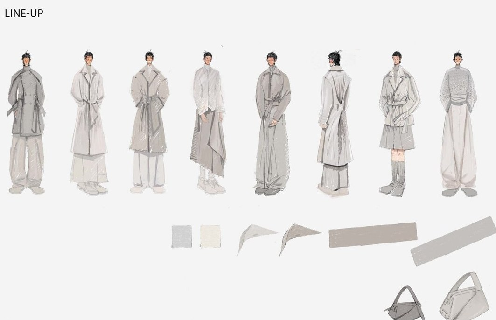
Huakun Zhu《EMBRACE》：几乎整个系列都是大衣
加了外套，
还认得出是你吗？
- 1盖住什么外套盖住了哪儿？你的不变项还露在外面吗？
- 2穿得进去吗春夏那一套整套塞进外套里，碰不碰？
- 3怎么开穿着里层，外套从哪里开、扣在哪儿？
图：1 Granary《LCF MA Fashion 2026》（2026.2.21）作品集页｜Huakun Zhu《EMBRACE》｜课堂读图，仅供教学研究。
第1课时｜45分钟
女装设计 · 第10周
02 看·4分 一套里的五原则
一套衣服：六种语言，五条原则
一套里能动的只有六样——廓形、线、色彩、材质、细节、比例。设计，就是决定它们哪里相同、哪里不同、哪里最强。
- 统一一个想法领口、口袋、裤脚是同一种白软边——同一样东西出现两次以上
- 调和对比要搭桥硬红外套和软白裤之间，靠白边接上
- 均衡站得稳上身短而重（红、硬），下身长而轻（白、宽）
- 强调只破一处全身只有这一块大红——最强的对比只放一个地方
- 节奏视线会走白：领 → 口袋 → 裤脚，一路往下
挑你春夏五套里最弱的一套：五条缺哪条？只改一处补上，再进秋冬。
图：1 Granary《LCF MA Fashion 2026》（2026.2.21），台上图摄影 Roger Dean｜Qian Tan｜文字为课堂读图，仅供教学研究。
第1课时｜45分钟
女装设计 · 第10周
03 看·3分 系列是什么
系列＝一家人：一眼是一家，又各长各的样
五套不是五件作品。缺下面任何一条，就只是五套衣服。
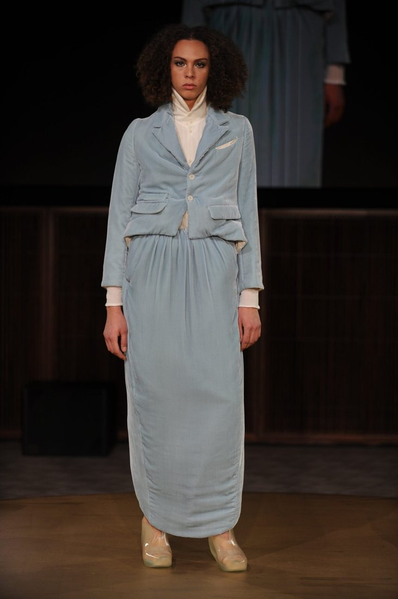
01开场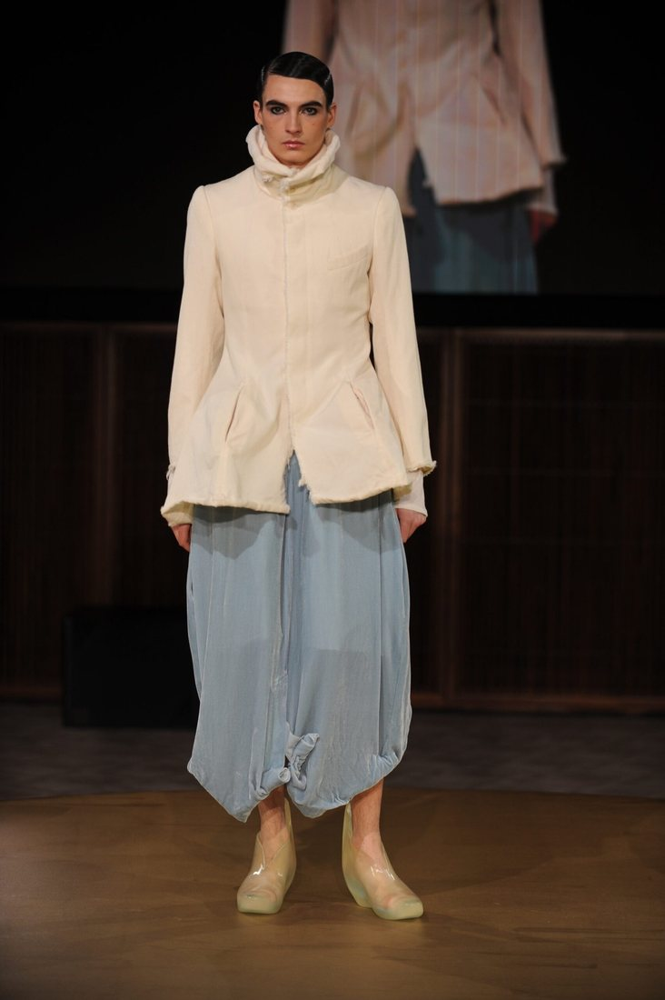
02入口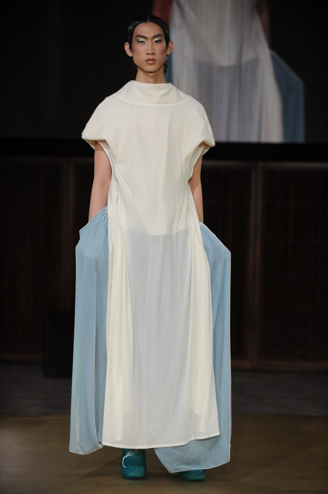
03发展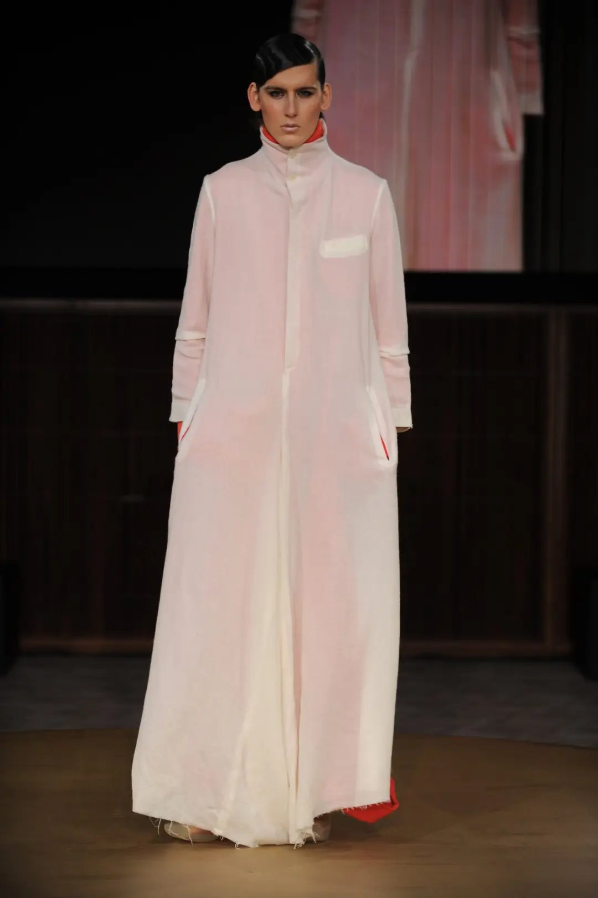
04转折05收束·最强1一个主题五套说同一件事——一句话说得出吗？
2一眼是一家高立领每套都有——遮住名字还认得出
3各长各样每套至少换一样——能互换＝重复
4有起有落最强的只有一套：05 红外套
5能拆能配短外套进了三套——一件进两套
图：1 Granary《LCF MA Fashion 2026》（2026.2.21），台上图摄影 Roger Dean｜Qian Tan｜文字为课堂读图，仅供教学研究。
第1课时｜45分钟
女装设计 · 第10周
04 看·3分 春夏→秋冬
外套一盖，五条原则换了位置
主题、不变项、第07周排的五个角色——都留下。要改的只是：五条原则落在身上的哪里。
统一同一种颜色、同一种轻薄料→外套上重复同一个细节：领、边、扣
调和轻薄料之间本来不打架→厚外套＋薄里层：用同色或同一条边搭桥
均衡轻重主要靠下装→外套长度和下装宽度，压住变重的上身
强调放在身上哪儿都行→放在外套上，或从外套下面露出来——被盖住的强调等于没有
节奏露多少、透多少交替→外套短·中·长交替，厚薄交替
Qian Tan 05 披上长大衣：让白软边从袖口露出来，强调就还在。
第1课时｜45分钟
女装设计 · 第10周
05 看·3分 秋冬必知
转秋冬：先换品类，再记六件事
同一个女装品牌，夏季和秋季各开发八十多款——总数差不多，换掉的是品类。
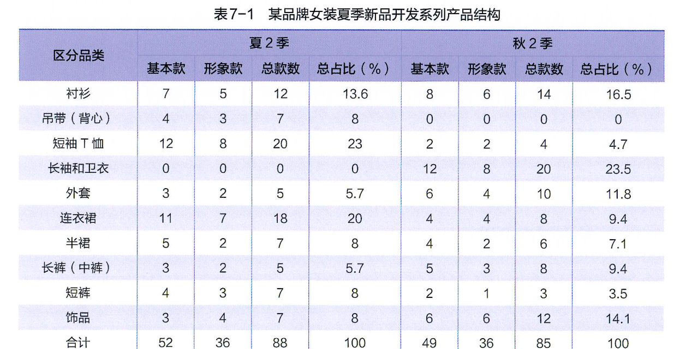
表7-1 某品牌女装 夏2季／秋2季（点击放大）
你的五套：外套至少出现三次；春夏无袖、吊带那一套，秋冬不能单穿。
最容易漏② 放量：外套比里层大一圈
肩、袖窿、袖肥、胸围都要放。外套和里层画成一样宽，就是穿不进去。
- ①层次两到三层：里层＋中层＋外套
- ③长度看外套到胯／膝／踝——决定盖住多少
- ④厚薄厚从哪儿来：毛呢、羊绒、絮棉、针织、皮革
- ⑤色彩外套面积最大＝主色；亮色只给露出来的一小块
- ⑥开合穿着里层要开得到底、扣得上；两层领不能顶住
来源：于芳《服装设计基础与创意实践》（中国纺织出版社，2023），第122页，表7-1（裁切局部）。
第1课时｜45分钟
女装设计 · 第10周
06 看·3分 案例①
先定外套的形，再试三版颜色
Huakun Zhu（LCF 硕士 2026）：线稿把外套的长短、领、腰带先定下来，再上三版颜色比。
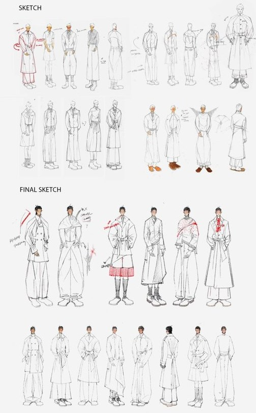
① 线稿：长短和领先定
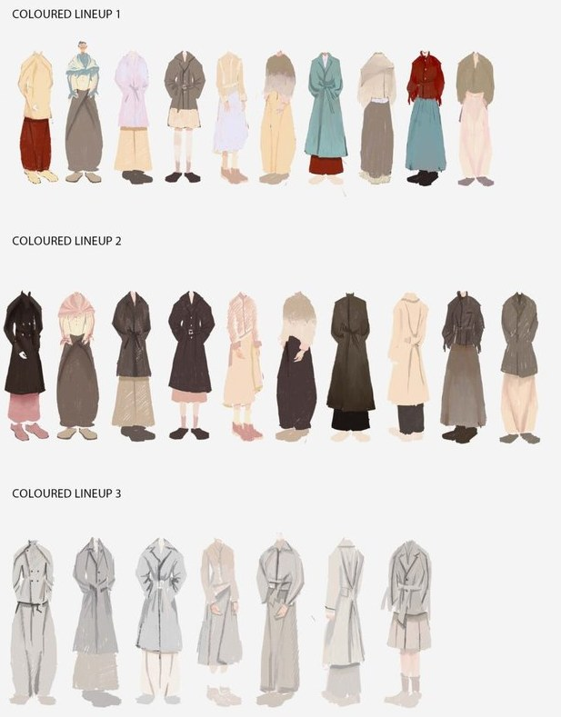
② 同一排外套，三版颜色
先形，
后色。
不要反。
- 形线稿里就分档到胯的短外套、到小腿的大衣、披着的、系腰带的
- 色三版并排比深外套＋浅里层最跳；全灰白最安静——定稿接近第三版
图：1 Granary《LCF MA Fashion 2026》（2026.2.21）作品集页｜Huakun Zhu《EMBRACE》｜课堂读图，仅供教学研究。
第1课时｜45分钟
女装设计 · 第10周
07 看·3分 案例②
秋冬的色：按面积排，最亮的最窄
Karolina Kalisciak《FUEL》2026秋冬：十八套排成一板，板底一排就是这个系列的料和色。
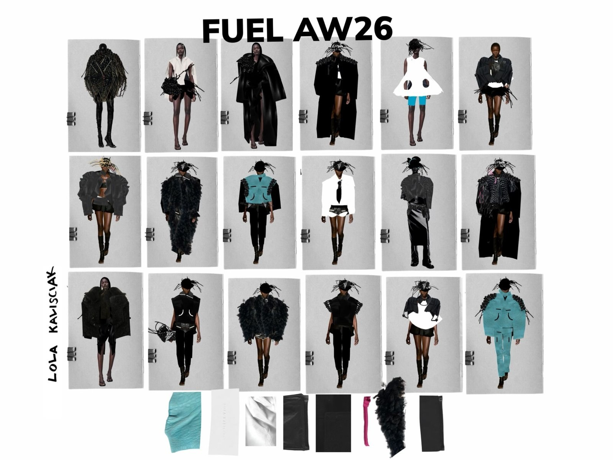
效果图整板＋板底色条（点击放大）
黑占大头，
粉只一条。
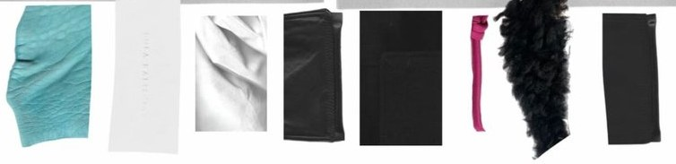
- 面积厚料＝主色大多是黑色外套、黑色长毛——厚料和主色是同一个
- 对比湖蓝、白只几套整件出现在少数几套上，一眼分开那几套
- 点最亮最窄粉色在板底只给最窄的一条
图：1 Granary《LCF MA Fashion 2026》（2026.2.21）作品集页｜Karolina Kalisciak《FUEL》2026秋冬｜课堂读图，仅供教学研究。
第1课时｜45分钟
女装设计 · 第10周
08 开场｜8分
今天：四样，各出一个秋冬版
四样都不重做——在春夏版上加一层、改一处。
8′开场回答上周那一句
10′步骤1外套三档
15′步骤2秋冬五套效果图
10′步骤3外套款式图
8′步骤4色彩面料板
8′互评指着五套说
现在 · 8 分钟
在五套里，圈出
外套最难加的那一套。
先读出上周写的“转到秋冬，最不确定的是 ___”。圈好后旁边写：外套到哪儿（胯／膝／踝）＋厚／薄。
没交第09周的：用第07周练习册的五个人形，只挑一套先做。
第09周的四样 → 秋冬版
| 春夏版 | 秋冬版改什么 |
|---|
| 廓形款式板 | 加一行外套三档，里层画虚线 |
| 五套效果图 | 每套分一档外套，写出不变项露在哪 |
| 款式图 | 三档外套各画正·背 |
| 色彩面料板 | 外套色排第一、最宽 |
第1课时｜45分钟
女装设计 · 第10周
09 做·10分 步骤1
外套三档：一短、一中、一长
从第09周带来的外套参考 3 张里来。练习册三个人形，一档画一个。
外套画实线，
里层画虚线。
虚线碰到实线＝
穿不进去。
改法只有两个：外套放大，或者里层减一样。
每一档写三行
- 1到哪儿胯／膝／小腿／踝——画一条横线；三档不能落在同一条线上
- 2怎么开前中开扣／拉链／系带／不扣披着
- 3厚还是薄只写一个字
最常碰的三处
- 袖泡袖塞不进窄袖
- 领两层领顶在一起
- 摆里层裙比外套宽
你的不变项要挪一样到外套上——没挪，就是别人的外套。
第2课时｜45分钟
女装设计 · 第10周
10 做·15分 步骤2
秋冬五套：每套分一档外套，写出“露在哪”
按第07周的角色分档。下面是照 Qian Tan 台上五套代拟的秋冬版——照这五行给你的五套各写一遍，再画。
| 01 开场 | 02 入口 | 03 发展 | 04 转折 | 05 收束 |
|---|
| 春夏原套 | 短外套＋高立领＋软长裙 | 短外套＋高立领＋收口软裤 | 高立领＋无袖长衣＋两侧软片 | 高立领长外套 | 短外套＋高立领＋宽软裤 |
| 秋冬加什么 | 外面加中档外套 | 短外套换厚的 | 里面加高领针织 | 换长档大衣 | 外面披长档大衣 |
| 几层·怎么开 | 3·扣到腰 | 2·照旧 | 3·照旧 | 2·开到底 | 3·不扣披着 |
| 不变项露在哪 | 软长裙从下摆露出 | 全露 | 两侧软片在最外面 | 高立领——大衣不做领子 | 白软边从袖口露出 |
入口最轻、收束最重。同一件外套至少进两套；长档不超过两套。
画在练习册新一张：五个人形，里层＋分到的那档外套。画完给同桌遮住里层看。
Qian Tan（LCF MA 2026）台上五套见第05、07周；本页秋冬五套为教师代拟，她本人没有做过。
第2课时｜45分钟
女装设计 · 第10周
11 做·10分 步骤3
三档外套款式图：正·背，画清五处
效果图上看不见的，款式图上必须有。照左边这张，每档外套画一张正面、一张背面。
基本型：单排两粒扣平驳领大衣（手绘示意）。实线＝外套，虚线＝里层（高领、袖子）。
对着编号，五处都要画到
- 1门襟和扣位单排／双排、几粒、扣到哪儿
- 2领把里层的领用虚线画进去——看会不会顶住
- 3口袋有盖袋（图上这种）／贴袋／嵌线袋，位置画准
- 4下摆和后开衩长档要开衩，不然迈不开步——画在背面
- 5外套袖比里层袖宽里层袖画虚线，要整个装得进外套袖——这就是“放量”
④ 在背面：后中缝一直画到下摆，后开衩画出叠门。三档 × 正·背 ＝ 六张。
第2课时｜45分钟
女装设计 · 第10周
12 做·8分 步骤4
色彩面料板秋冬版：色条的宽度＝它在五套里占多大
春夏的颜色一个不扔，加上外套色，再按面积重排。加了外套，五套里最大的一块就是外套——它排第一、最宽。
春夏版：每个颜色一样宽
秋冬版：数一数五套里各占多大，再按大小排
最亮的颜色，
只给一小块。
真实案例：Karolina Kalisciak 板底色条
黑色外套占了大多数套→黑条最宽；粉色只在一两处露出→最窄的一条。
面料今天只写一个字：每档外套旁边写“厚”或“薄”。第11周换成面料参考图（有出处；不买布、不做样）。
图：1 Granary《LCF MA Fashion 2026》（2026.2.21）作品集页｜Karolina Kalisciak《FUEL》2026秋冬｜课堂读图，仅供教学研究。
第2课时｜45分钟
女装设计 · 第10周
13 互评8分＋交什么
加一层还认得出是你，才算秋冬
两人一组，指着五套说。意见落到一套、一处上。
“我的秋冬五套，
靠 ___ 认得出是我的。”
听的人只问一句：“哪一套遮住以后认不出来？”——说的人当场在那一套旁边写“待改”。
第11周课前 · 学号_姓名_第10周.pdf · 交给学委
- 1廓形款式板＋外套三档
- 2秋冬五套效果图每套写出“不变项露在哪”
- 3三档外套款式图正·背
- 4色彩面料板秋冬版外套色排第一
计分看三样：三档差得开；五套都写得出“露在哪”；效果图和款式图是你自己的手绘——AI 图不算。
第11周带：外套面料参考图 3 张（每档一张，有出处，看得出厚）。
十六周课程路径女装设计 · 第10周 · 课后查阅｜教学补充
十六周不是孤立主题，而是一条连续的设计证据链
前8周建立方法并完成中期验证；后8周深化春夏与秋冬系列，最终独立完成主题系列与答辩。
01–04判断与定位
05–08提取与验证
09–12季节系列开发
13–16独立项目与考核
已完成本周后续
课后查阅｜教学补充
女装设计 · 第10周
A02 秋冬三问自查单
五套 × 三问，带回家对着打勾
三条过两条进第11周；没过的，第11周开场十分钟补那一条。
| 盖住什么（不变项露在哪） | 穿得进去吗（虚线没碰实线） | 怎么开（穿着里层开得到底） | 厚／薄 |
|---|
| 01 | □ | □ | □ | |
| 02 | □ | □ | □ | |
| 03 | □ | □ | □ | |
| 04 | □ | □ | □ | |
| 05 | □ | □ | □ | |
长档超过两套？回到步骤2重分。五件外套认不出是一个人做的，就是换了个人。
课后查阅｜教学补充
女装设计 · 第10周
A03 效果图｜画出厚度
一套效果图里，厚和叠穿怎么画出来
Huakun Zhu 的单套效果图：大衣盖住高领针织，领口露出一截。
- 厚看轮廓肩和袖比身体宽出一圈，下摆硬挺——画的是厚料的轮廓，不是线条多
- 层看领口和袖口里层高领、外套翻领上下错开，一眼看出几层
你的秋冬效果图里，里层从哪一处露出来？画不出来，回到步骤1看虚线。
图：1 Granary《LCF MA Fashion 2026》（2026.2.21）作品集页｜Huakun Zhu《EMBRACE》｜课堂读图，仅供教学研究。
课后查阅｜教学补充
女装设计 · 第10周
A04 教材证据｜色彩故事
色卡不是色彩故事——要落到品类、位置和面积上
教材这张色卡和款式图同框：米、驼、灰、黑占三分之二以上，橙、黄、蓝、红只占少数。
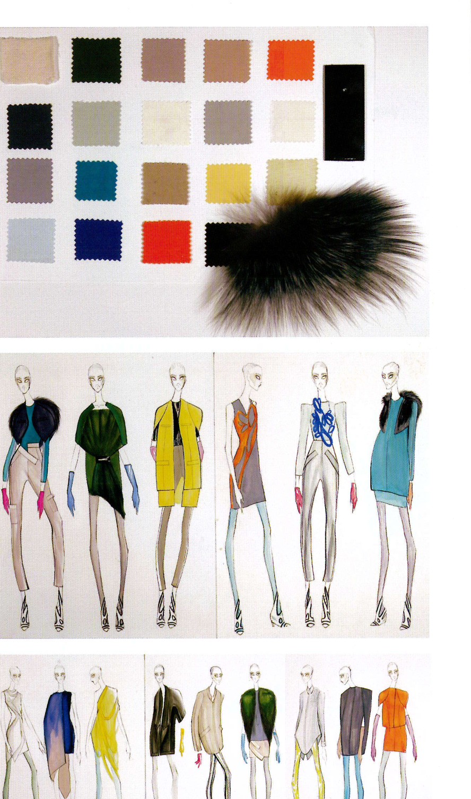
色卡与款式图同框（点击放大）
- 面积数量比＝面积比中性色铺满衣身，高彩色只出现在手套、局部色块和配饰
- 对照步骤4外套＝主色；露出来的那一截＝春夏的颜色；最亮的给最小的一块
你的五套里，最亮的颜色在多大的一块上？
来源：Steven Faerm《The Fashion Design Course》（Quarto Publishing plc），第52页。课件文字为课程改写；图像按教学需要裁切局部，未改变原始比例。
课后查阅｜教学补充
女装设计 · 第10周
A05 期末评价连接
本周成果将进入同一套六项终期评价
平时训练不是零散作业，而是期末系列的证据积累；本页依据《25级〈女装设计〉考核大纲》期末实践考试评分标准（满分100分）。
10分
时代性与创意
主题回应当下，并形成自己的问题与立场。
10分
趋势性与元素
提炼的设计元素与当季趋势、审美和来源一致。
20分
当代女性适配
款式回应身体、动作、场景与真实穿着需求。
20分
整体造型美感
比例、色彩、材料与细节共同形成完整造型。
20分
市场与定位
顾客、价格、品类和使用情境边界清楚。
20分
统一与丰富
风格统一，同时具有角色、搭配与造型变化。